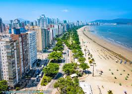

Santos é uma das cidades mais emblemáticas do litoral paulista, combinando importância histórica, econômica e turística. Fundada em 1546, desempenhou papel fundamental no ciclo do café e no desenvolvimento portuário do Brasil. Hoje, abriga o maior porto da América Latina, que impulsiona a economia nacional e conecta o país ao mundo.
Além da força econômica, Santos é reconhecida pela qualidade de vida e pela vocação turística. A cidade possui a maior orla de praia jardinada do planeta, registrada no Guinness Book, que atrai visitantes em busca de lazer e beleza natural. Seu clima agradável, a infraestrutura urbana e as opções culturais tornam o município um dos destinos mais procurados do estado.
Santos também se destaca por preservar sua memória histórica em casarões, museus e monumentos, ao mesmo tempo em que investe em modernização e inovação. Essa mistura de passado e presente faz da cidade um local único, capaz de agradar tanto quem busca história quanto quem procura lazer e diversão à beira-mar.
• Orla da Praia de Santos – Famosa pelos jardins que se estendem por quilômetros, oferecendo lazer e contato com a natureza.
• Museu do Café – Instalado na antiga Bolsa Oficial do Café, conta a história do grão que impulsionou o desenvolvimento da região.
• Monte Serrat – Mirante acessível por bondinho ou escadaria, com vista panorâmica da cidade.
• Aquário Municipal – Um dos aquários mais visitados do Brasil, com espécies marinhas de diferentes partes do mundo.
• Centro Histórico – Preserva construções antigas e abriga roteiros turísticos ligados ao período colonial e ao ciclo do café.

Retorne a Página Anterior